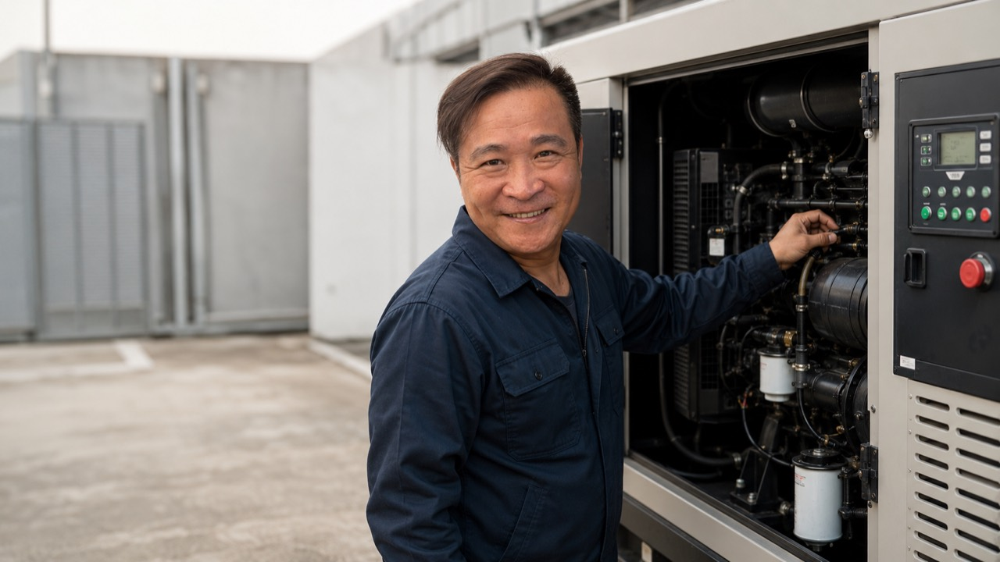
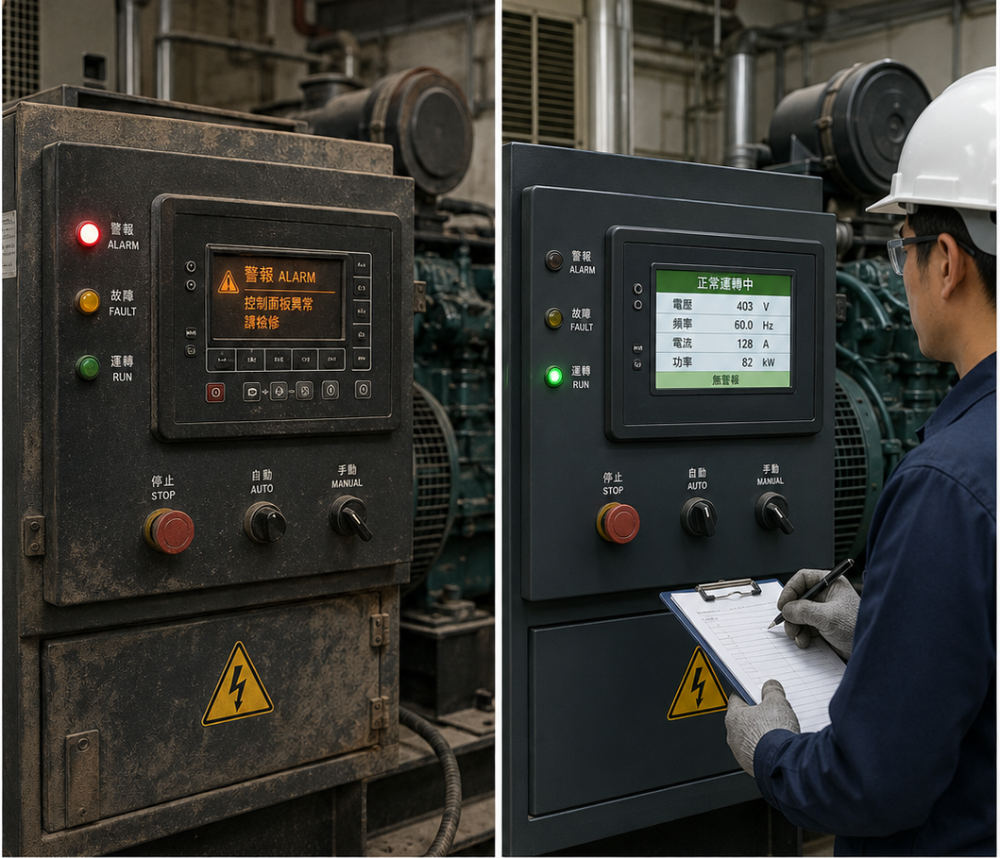
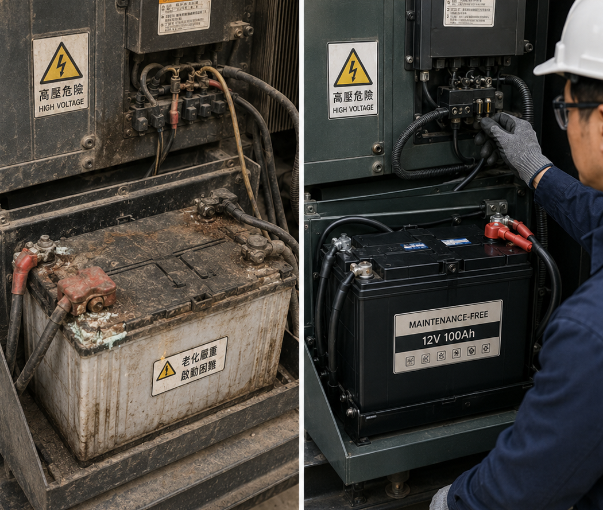
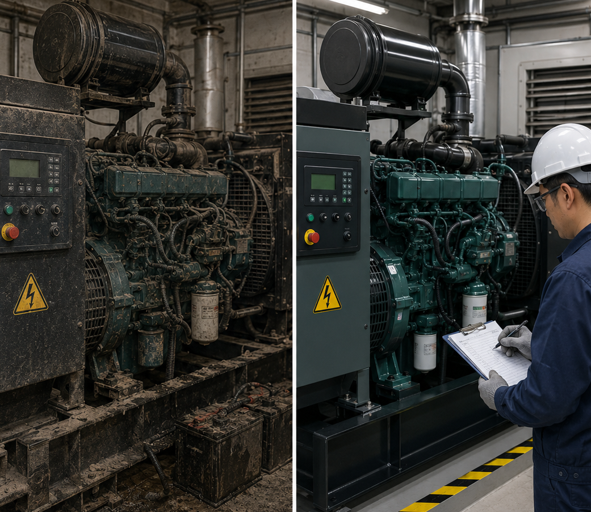
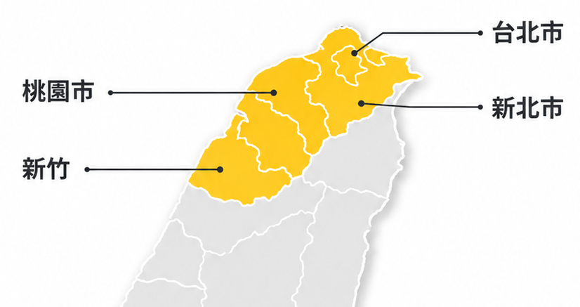

現場判斷・快速排除
讓您的電力不中斷
你可能遇到的狀況
You May Encounter
服務項目
Our Services
維修流程
Our Process
- 1傳照片影片提供機組狀況
- 2初步判斷了解問題原因
- 3確認地點機型準備所需工具
- 4約定到場安排服務時間
- 5報價維修說明維修內容
- 6完成測試測試運轉交機
常見維修問題
Common Repair Issues

問題 1｜控制面板故障警報
問題：控制面板異常、警報燈亮起。處理：檢測控制迴路與面板設定。
結果：警報排除，電壓頻率恢復穩定。
問題 2｜電瓶老化啟動困難
問題：電瓶老化、端子氧化導致啟動不良。處理：更換電瓶並整理接線。
結果：啟動反應正常，備用電力可即時啟用。
問題 3｜機組髒污與保養不足
問題：長期未保養、機組髒污影響散熱與運轉。處理：清潔檢查並完成保養。
結果：運轉穩定，現場檢測紀錄正常。服務地區
新竹
桃園
雙北

其他地區可先 LINE 洽詢。
常見問題 FAQ
維修需要多久時間？
依故障狀況而定，建議先傳照片、影片與機型資訊，方便初步判斷。
維修費用如何計算？
會依到場地點、檢測項目、耗材與維修內容報價。
需要先準備什麼資料？
請準備外觀照片、控制面板照片、銘牌照片與故障影片。
你們有保固嗎？
依維修項目與更換零件提供說明。